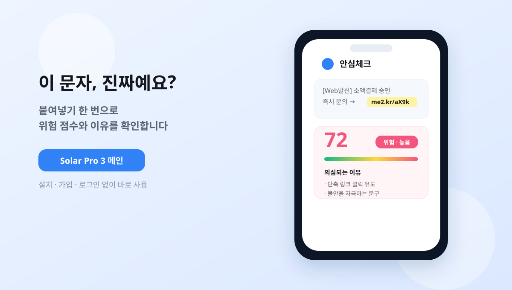
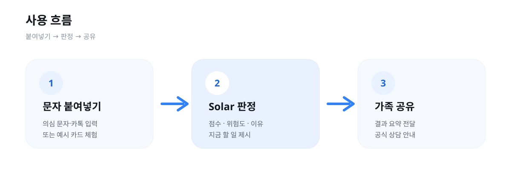
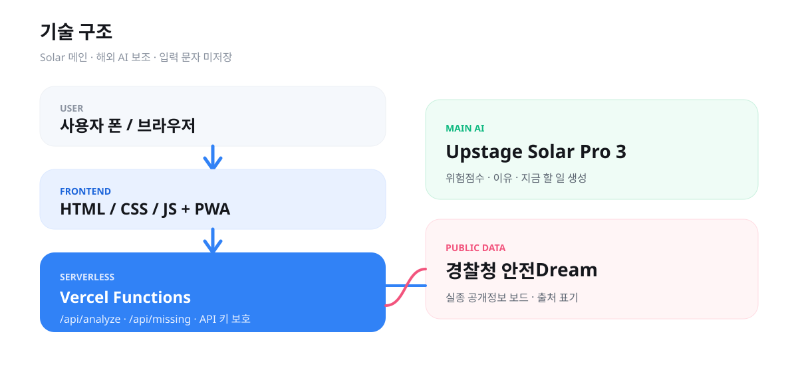

의심 문자가 왔을 때,
부모님이 혼자 판단해야 하는 순간.
- 1부모님 폰에 모르는 문자가 옵니다.
- 2지금 당장 자녀에게 물어보기 어렵습니다.
- 3앱 설치·가입이 필요한 서비스는 쓰기 어렵습니다.
- 4그래서 붙여넣기 한 번으로 끝나게 만들었습니다.
설치·가입 없이 받은 문자를 붙여넣기만 하면,
국내 AI가 위험 여부와 이유까지 바로 알려 줍니다.
교육에서 배운 국내 LLM Solar를 메인으로 써서, 부모님 세대를 위한 사기 문자를 바로 확인하도록 만든 무설치 웹 서비스입니다.

"지금 안 하면 큰일 난다"는 압박이 정상적인 판단을 흔듭니다.
패닉이 오면 "일단 확인해보자"는 여유 자체가 사라집니다.
설치·회원가입·계좌 연결이 필요한 순간, 정작 필요한 분은 멈춥니다.
리부트 AI 과정에서 배운 국내 LLM 활용과 프롬프트 설계를, 부모님 문자 확인이라는 실제 생활 문제에 바로 적용했습니다.

설치·가입·로그인 없이 링크 하나로 바로 사용. 홈 화면에 추가하면 앱처럼 켤 수 있습니다.
큰 글씨, 쉬운 말, 결과 읽어주기, 위험 부분 하이라이트.
가족 공유와 공식 상담 안내(1394·1332)로 다음 행동을 연결합니다.
확인 후 남는 자리에는 광고 대신 경찰청 실종 공개정보를 둡니다.
국내 LLM이 메인입니다. Solar가 문자 위험도를 판정하고, Claude Code·Codex는 구현·QA 보조로만 사용했습니다.
이유: "계좌 이체를 요구합니다" → 위험도: 낮음
근거는 사기인데 판정이 어긋나던 문제.
같은 문자 → 위험도: 높음
"이유와 위험도는 일치" 규칙을 넣어 바로잡았습니다.
평범한 문자를 사기로 오판 → "지어내지 않기" 규칙으로 해결
실종 사진 base64 원문 문제 → data URI 변환으로 정상 표시

페르소나 기반 시나리오
까다로운 샘플 통과
서비스 오류 0건